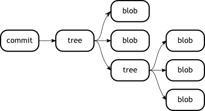
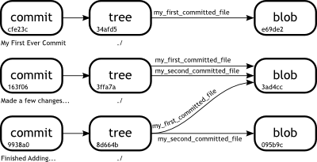

Week 2"A Little Of Git's Internals"
A Look At Plumbing
This After Hours section is going to get a little deep.
For some of you it may be more information than you bargained for.
However, sometimes, when the worst happens, it is comforting to know that you at least have a basic understanding of what is happening under the hood.
These After Hours sections are designed to give you that knowledge.
They are for the people who are not just satisfied with knowing that things work, but they want to know why things work.
To start with, we are going to use the Git repository that we have been playing with in Week 2 and take a deeper look at what is actually inside a Git repository.
Let us view the directory structure, to see what has been created in the .git folder.
john@satsuki:~/coderepo/.git$ ls -la
total 52
drwxr-xr-x 8 john john 4096 2011-03-31 20:35 .
drwxr-xr-x 3 john john 4096 2011-03-31 20:28 ..
drwxr-xr-x 2 john john 4096 2011-03-31 20:22 branches
-rw-r--r-- 1 john john 30 2011-03-31 20:34 COMMIT_EDITMSG
-rw-r--r-- 1 john john 92 2011-03-31 20:22 config
-rw-r--r-- 1 john john 73 2011-03-31 20:22 description
-rw-r--r-- 1 john john 23 2011-03-31 20:22 HEAD
drwxr-xr-x 2 john john 4096 2011-03-31 20:22 hooks
-rw-r--r-- 1 john john 208 2011-03-31 20:35 index
drwxr-xr-x 2 john john 4096 2011-03-31 20:22 info
drwxr-xr-x 3 john john 4096 2011-03-31 20:27 logs
drwxr-xr-x 13 john john 4096 2011-03-31 20:34 objects
drwxr-xr-x 4 john john 4096 2011-03-31 20:22 refs
john@satsuki:~/coderepo/.git$
branches - Though deprecated now, this folder stores shorthands for git pull, push and fetch commands, by creating a file, the name of which is passed to the command instead of the repository argument.
COMMIT_EDITMSG - This file holds the last commit message that was displayed in the editor.
config - This is the main configuration file for Git.
It is the first place git looks for upon invocation.
If this file is not present, Git will inspect ~{/.gitconfig}.
After this, Git will go to /etc/gitconfig.
The file holds information about the remotes, tracking branches, push configurations and many more items.
description - This is a simple text file which gives a description to a repository when being view via gitweb or similar.
HEAD - This file is a pointer to the parent commit of your current branch.
hooks - Scripts can be placed in here to perform operations at certain points during the commit process.
info - The info folder contains some additional information about the repository
logs - The logs folder holds various logs regarding Git's operation
objects - The is the directory that holds all of the actual files that are stored in the repository.
The files are named by their SHA-1 values.
Inside the folder are a number of directories which make up the first 2 characters of the SHA-1 value.
The remaining portion of the SHA-1 hash is used to name the file.
ORIG_HEAD - Hold the previous SHA-1 hash that HEAD pointed to.
This allows certain operations to go back, in the case of failure.
(Not present in our listing)
refs - This folder holds the files that contain information about local branches, remote branches and tags.
More files and folders will appear here during the running of the repository as you begin to start using different features in Git.
The most interesting of the folders here is the objects folder.
This folder as previously described holds all of the objects that are stored in the repository.
Now, what do we actually mean by objects.
As yet, we have not really defined what an object is.
We are going to look now at three types of object that Git places in this directory.
These are the commit, tree and blob objects.
We need a little more information as the names themselves do not fully describe what the item is.
- commit - A commit object is an object that describes a specific point in time.
Whenever you perform a
git commit from the command line, what you are actually doing is creating one of these objects in the repository.
This object stores information about the committer, the date, a link to the previous commit object and most importantly a link to the tree object of the current commit.
- tree - A tree object defines which files were physically included in the commit when it was added to the database.
The tree contains the name of the files that were present in the tree by recording their blob SHA-1 id and their filename.
Sub-folders of a directory will be referenced by another tree object.
In this way, a tree object will contain references to both tree objects and blob objects
- blob - A blob object actually contains the data that resides inside the file.
There is one object generated per revision of a file.
However, if exactly the same data resides in two separate files, then there will only be one object created and that object will be referenced by two trees.
In this way, multiple copies of the same file, or files which have not changed through multiple revisions are not stored multiple times.
Even though Git stores a complete snapshot of the file system at every revision.
So, when we commit into the repository we create a commit object.
The commit objects houses links to a tree.
The tree object contains links to either blobs or trees.
Regardless, the structure of a basic repository may look something a little like Figure 1.
|  |
|
Figure 1
Overview of objects in a repository |
|
So now we know what a basic repository should look like, let us go through each stage of our committing in Week 2 and see how it is built up at each stage.
Below is a consolidated list of all the objects in the repository.
./09/5b9cda52807c9c11781ec0a4aee927787b61f1
./16/3f06147a449e724d0cfd484c3334709e8e1fce
./34/a5dff148e70c12310cda0800d6bcaf82530bdc
./3a/d4cc3fe5a61c5563cb1b2ff3680d7e95be0fce
./3f/fa7ab6dafef2bc38a70a39c53604c333ed4d7a
./8d/664b74cce3a1f24d498d2d2bcc36e9915b5a65
./99/38a0c30940dccaeddce4bb2eb151fba3a21ae5
./cf/e23cbe0150fda69a004e301828097935ec4397
./e6/9de29bb2d1d6434b8b29ae775ad8c2e48c5391
In order to start rebuilding a picture of our repository, let us first find out what the first commit to our repository was.
Looking back in Week 2 we can see the following trimmed output.
[master (root-commit) cfe23cb] My First Ever Commit
So we need to start with the object that begins cfe23cb.
Remember in the description above about the SHA-1 hashes, the first two bytes are the directory name.
We are looking for a file that starts with the characters e23cb and it will be in the directory called cf.
By George! Looking at the list above, we can see that there is one file which fits the bill.
In fact it would be a little ambiguous if there were two.
It could happen that we would have two SHA-1 hashes that started with the same seven characters, but it's not likely.
The line we are interested in is listed below.
./cf/e23cbe0150fda69a004e301828097935ec4397}
It would be nice if we could find out a little more about this object, and confirm that it is what we expect it to be.
to start with, let us run the Linux file command on it, to see what it makes of it.
john@satsuki:~/coderepo/.git/objects/cf$ file e23cbe0150fda69a004e301828097935ec4397
e23cbe0150fda69a004e301828097935ec4397: VAX COFF executable - version 5185
john@satsuki:~/coderepo/.git/objects/cf$
The file command, tells us that the file is actually of VAX COFF executable - version 5185 filetype.
This is obviously not correct.
Git stores its objects by Zlib compressing them, which is why it is difficult for the file command to make any sense out of them.
Later in the book, you will find out exactly how to generate your own repository from scratch, but for now, let us just understand that Git first creates a header for the content, then adds the content to the header, creates the SHA-1 hash of such data and finally Zlib compresses it to store to disk.
Out comes the wrench
Wouldn't it be nice if we could view the data that was inside the file simply, without having to write our own tools.
If you look through the Git man page, you will find one listed under the Interrogation section, called git cat-file.
Anyone who has spent any time with Git will know what the cat command does.
cat is used to display the contents of files.
In Git, this command is used to display the contents, type or size of a repository object, be it either of type commit, tree or blob.
Information - What's with all the wrenches?
You may have noticed the less than subtle references to plumbing.
Git has two types of commands.
Those that are readily available to the end user, and those that are not.
The commands that are readily available to the end user are called Porcelain commands because they have been refined and are simple to use, think Tap and Sink.
Commands which get a little down and dirty with the details are called Plumbing commands because they are dealing with the primitive objects that make things work, think Pipes and Joints.
If we run this plumbing command against our object, and supply the -t parameter, git cat-file will tell us the type of the object.
If we run it with the -s parameter, it will tell us the size.
Finally, running it with the -p parameter we can see what the object actually contains.
Each of these has been demonstrated below.
john@satsuki:~/coderepo$ git cat-file -t cfe23c
commit
john@satsuki:~/coderepo$ git cat-file -s cfe23c
215
john@satsuki:~/coderepo$ git cat-file -p cfe23c
tree 34a5dff148e70c12310cda0800d6bcaf82530bdc
author John Haskins <john.haskins@tamagoyakiinc.koala> 1301599664 +0100
committer John Haskins <john.haskins@tamagoyakiinc.koala> 1301599664 +0100
My First Ever Commit
john@satsuki:~/coderepo$
Fantastic! We now have a way of confirming the objects are what we think they are.
If we were to run the command against every file in the repository, we would end up with a list that would look something like the one below.
Notice our commit object sat in the middle.
./09/5b9cda52807c9c11781ec0a4aee927787b61f1 blob
./16/3f06147a449e724d0cfd484c3334709e8e1fce commit
./34/a5dff148e70c12310cda0800d6bcaf82530bdc tree
./3a/d4cc3fe5a61c5563cb1b2ff3680d7e95be0fce blob
./3f/fa7ab6dafef2bc38a70a39c53604c333ed4d7a tree
./8d/664b74cce3a1f24d498d2d2bcc36e9915b5a65 tree
./99/38a0c30940dccaeddce4bb2eb151fba3a21ae5 commit
./cf/e23cbe0150fda69a004e301828097935ec4397 commit
./e6/9de29bb2d1d6434b8b29ae775ad8c2e48c5391 blob
Now things start to get interesting.
Did you also notice the tree SHA-1 hash mentioned when we ran git cat-file -p? This is the tree object that stores the file structure.
Why don't we run the command against that file too?
Note - Packing for a holiday?
It is worth noting that the objects noted above are not the only objects that you will find in the objects folder.
Git will sometimes clean itself up and perform packing operations.
This is out of scope for this chapter though.
john@satsuki:~/coderepo$ git cat-file -p 34a5dff
100644 blob e69de29bb2d1d6434b8b29ae775ad8c2e48c5391
my_first_committed_file
john@satsuki:~/coderepo$
We can now see a list of all files that were present in that snapshot of the working tree.
In our case this just happens to be one file.
Using our command one last time against the object name of the file, we can see the actual contents of the file.
john@satsuki:~/coderepo$ git cat-file -p e69de29
john@satsuki:~/coderepo$
At first glance one may consider it odd that there is nothing in there.
However, if we take a trip back in time and flick back to the first commit that we made to our repository, you will see that we never actually put any content in our file at all.
So, the object contains nothing.
Now we can draw up a diagram of our repository after the first commit.
|
|
Figure 2
Overview of objects in repository after first commit |
|
If we pick another commit object from the list and run our command on it we can see something new has appeared in the output.
john@satsuki:~/coderepo$ git cat-file -p 163f061
tree 3ffa7ab6dafef2bc38a70a39c53604c333ed4d7a
parent cfe23cbe0150fda69a004e301828097935ec4397
author John Haskins <john.haskins@tamagoyakiinc.koala> 1301599979 +0100
committer John Haskins <john.haskins@tamagoyakiinc.koala> 1301599979 +0100
Made a few changes to first and second files
john@satsuki:~/coderepo$
This commit object has an extra field.
This field is the parent field.
It tells Git which commit object is the parent to this one.
We were lucky in our guess that the parent object cfe23cb was actually the object we had first encountered.
By knowing this nugget of information, we can actually deduce that the object 9938a0c was actually the next commit.
Checking in Week 2 will confirm this.
It seems we could now build a complete history of our repository so far.
If we did so, we would end up with a diagram that looked a little like the one below.
|  |
|
Figure 3
Overview of objects in repository after three commits |
|
Hopefully you can see from this diagram that Git will reuse objects as discussed above.
This diagram describes the repository layout completely and if you correlate, we have correctly identified and accounted for each object in the repository.
Now we know how to traverse a repository.
In Week 3 we find the Git commands to let us do that without having to break out the wrenches and resort to plumbing.
After all, why use a wrench to turn on a tap? |
|